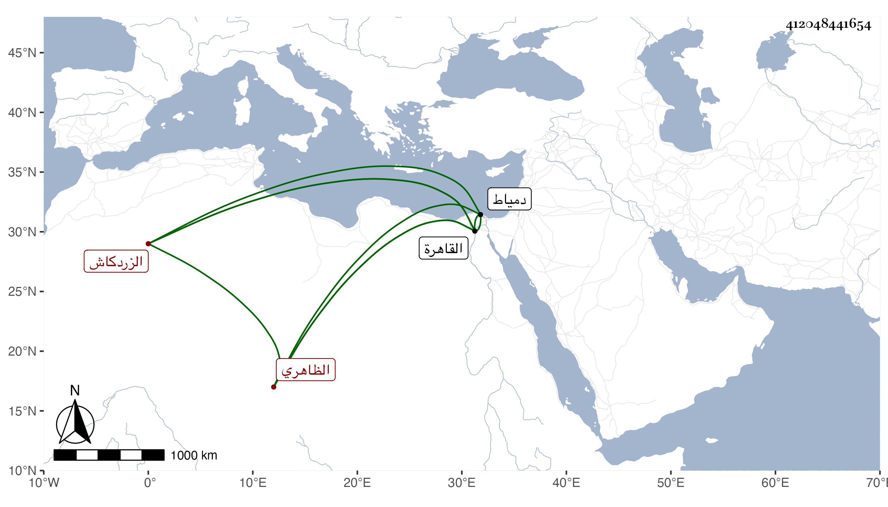

0902Sakhawi.DawLamic.ITO20230111-ara1.EIS1600.412048441654
Biography ID: 412048441654
980
اسنباي الظاهري برقوق الزردكاش . أسره تمرلنك واختص به بحيث عمله زردكاشا عنده ولزم خدمته حتى مات فقدم القاهرة واستقر به المؤيد زردكاشا كبيرا ثم عزل في أيام الظاهر ططر وأقام أمير عشرة ثم نقله الأشرف إلى نيابة دمياط ثم عاد إلى القاهرة أيام الظاهر جقمق على أمرته واستمر حتى مات في سنة اثنتين وخمسين عن نحو تسعين سنة وهو ممتع بحواسه وبلغنا عن المقريزي أنه قال أنه لم ير من يحفظ الحوادث والوقائع برمتها يعني من أبناء جنسه مثله .
